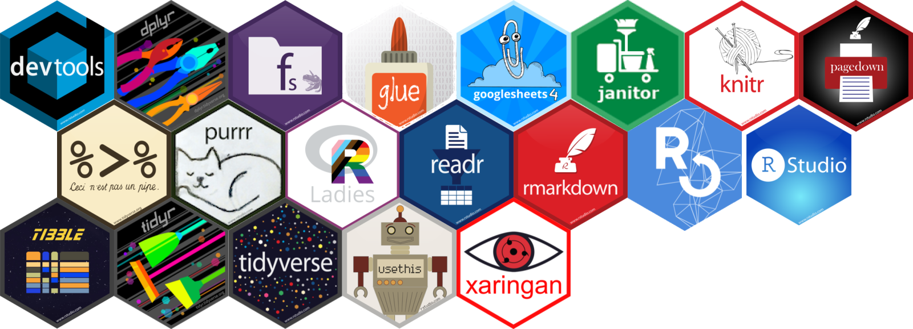

class: titulo, center, title-slide, title-slide # Como usamos R na organização da R-Ladies São Paulo? ## <center>  </center> ### Jean Prado e Beatriz Milz. R-Ladies São Paulo ### Atualizado em 20 de dezembro de 2020 --- layout: true <div> <style type="text/css">.xaringan-extra-logo { width: 110px; height: 128px; z-index: 0; background-image: url(https://beatrizmilz.github.io/slidesR/introR/img/rainbow-inclusive.png); background-size: contain; background-repeat: no-repeat; position: absolute; top:1em;right:1em; } </style> <script>(function () { let tries = 0 function addLogo () { if (typeof slideshow === 'undefined') { tries += 1 if (tries < 10) { setTimeout(addLogo, 100) } } else { document.querySelectorAll('.remark-slide-content:not(.hide-logo):not(.title-slide)') .forEach(function (slide) { const logo = document.createElement('a') logo.classList = 'xaringan-extra-logo' logo.href = 'https://github.com/R-Ladies-Sao-Paulo/RLadies-Brasil' slide.appendChild(logo) }) } } document.addEventListener('DOMContentLoaded', addLogo) })()</script> </div> --- class: perfil # Quem somos nós? .pull-left[ ### Jean Prado ] .pull-right[ ### Beatriz Milz <a href='https://beatrizmilz.com'><i class="fas fa-house-user"></i></a> <a href='mailto:beatriz.milz@usp.br'><i class="far fa-envelope"></i></a> <a href='https://twitter.com/BeaMilz' target="_blank"><i class="fab fa-twitter"></i></a> <a href='https://github.com/beatrizmilz' target="_blank"><i class="fab fa-github"></i></a> <a href='https://orcid.org/0000-0002-3064-4486' target="_blank"><i class="fab fa-orcid"></i></a> <a href='http://lattes.cnpq.br/5150665880581477' target="_blank"><i class="ai ai-lattes"></i></a> <a href='https://beatrizmilz.github.io/resume/index.html' target="_blank"><i class="ai ai-cv"></i></a> <a href='https://discourse.curso-r.com/u/beatrizmilz/summary' target="_blank"><i class="fab fa-discourse"></i></a> <a href='https://www.instagram.com/beatrizmilz/' target="_blank"><i class="fab fa-instagram"></i></a> - [Instrutora de `tidyverse` certificada pela RStudio](https://education.rstudio.com/trainers/people/milz+beatriz/) - Co-organizadora: [R-Ladies São Paulo](https://www.meetup.com/R-Ladies-Sao-Paulo/), [satRday São Paulo](https://saopaulo2019.satrdays.org/), [LatinR](https://latin-r.com/pt), [useR! 2021 global](https://user2021.r-project.org/) - Doutoranda em Ciência Ambiental (IEE/USP) - Mestre em Ciências (UNIFESP) - Bacharela em Gestão Ambiental (EACH/USP) - [Embaixadora de Inovação Cívica da Open Knowledge Brasil](https://embaixadoras.ok.org.br/). ] --- class: # Objetivos <br><br> Apresentar alguns projetos/repositórios no GitHub onde utilizamos R, feitos para auxiliar nas atividades de organização da R-Ladies: - [Robô de boas vindas](https://github.com/R-Ladies-Sao-Paulo/rladies-sp-welcome-bot) - Certificados - RLadiesTheme - RLadies Brasil --- class: middle, center, inverse # Robô de boas vindas --- class: # Robô de boas vindas - Pessoas colaboradoras: - Jean Prado - Principais pacotes utilizados: - [telegram.bot](https://github.com/ebeneditos/telegram.bot) --- class: middle, center, diagramas, hide-logo # Exemplo de mensagem enviada <img src="img/telegrambot.png" width="60%" style="display: block; margin: auto;" /> --- class: middle, center, inverse # Certificados --- class: # Certificados - Repositório privado no GitHub. - Projeto de uso interno: apenas para uso das pessoas organizadoras. - Objetivo: facilitar o envio de certificados para as pessoas participantes dos eventos. - Pessoas colaboradoras: - Geovanna Lopes - [Ianní Muliterno](https://www.linkedin.com/in/iann%C3%AD-muliterno/) - Jean Prado - Beatriz Milz --- class: middle, center, diagramas, hide-logo # Exemplo do certificado gerado <img src="img/exemplo_certificado.png" width="2156" style="display: block; margin: auto;" /> --- class: middle, center, diagramas, hide-logo # Exemplo do email enviado <img src="img/certificado-email.png" width="1992" style="display: block; margin: auto;" /> --- class: diagramas, hide-logo <img src="img/certificados.png" width="90%" style="display: block; margin: auto;" /> --- class: # Certificados - Principais pacotes usados: - [googlesheets4](https://googlesheets4.tidyverse.org/) - obtenção dos dados no Google Sheets - [janitor](https://github.com/sfirke/janitor), [dplyr](https://dplyr.tidyverse.org/) - limpeza e manipulação de dados - [rmarkdown](https://rmarkdown.rstudio.com/), [purrr](https://purrr.tidyverse.org/), [xaringan](https://github.com/yihui/xaringan), [pagedown](https://github.com/rstudio/pagedown) - gerar o certificado - [beepr](https://www.r-project.org/nosvn/pandoc/beepr.html) - sons para avisar que o código foi executado - [gmailr](https://gmailr.r-lib.org/) - envio dos emails através da API do gmail - Possibilidade de melhorias: - Diminuir necessidade de mudança/escrita.. - Melhorar o fluxo para cada tipo de certificado (pessoas organizadoras, pessoas participantes, pessoas palestrantes) --- class: middle, center, inverse # RLadiesTheme --- class: # RLadiesTheme - Objetivo: disponibilizar temas em RMarkdown de uso da comunidade R-Ladies São Paulo - Como surgiu ? - Apresentação sobre a comunidade R-Ladies São Paulo, que usamos no começo de todos os eventos. - Primeira versão dessa apresentação foi criada em dezembro de 2018 --- class: # RLadiesTheme - Principais pacotes usados: - [actions](https://github.com/r-lib/actions) - GitHub Actions para a comunidade R - [rmarkdown](https://rmarkdown.rstudio.com/), [xaringan](https://github.com/yihui/xaringan), [pagedown](https://github.com/rstudio/pagedown), xaringanExtra, - fs - pacotes do tidyverse - Próximos passos: - Mudar o tema CSS da apresentação com xaringan; - Testar a instalação do pacote em outros computadores; - Pedir para pessoas de outros capítulos testarem e fazer sugestões; - Documentar no README sobre como usar o pacote; - Expandir os templates Rmd... sugestões? --- class: middle, center, inverse # RLadiesBrasil --- class: # RLadiesBrasil - Principais pacotes usados: - [actions](https://github.com/r-lib/actions) - GitHub Actions para a comunidade R - [rmarkdown](https://rmarkdown.rstudio.com/) - meetupr - sodium, cyphr --- class: # Saiba mais sobre a R-Ladies .pull-left[ - R-Ladies Global: [Website](https://rladies.org/), [<i class="fab fa-twitter"></i> Twitter](https://twitter.com/rladiesglobal) - R-Ladies São Paulo: - [<i class="fab fa-twitter"></i> Twitter](https://twitter.com/RLadiesSaoPaulo) - [<i class="fab fa-instagram"></i> Instagram](https://instagram.com/RLadiesSaoPaulo) - [<i class="fab fa-facebook"></i> Facebook](https://facebook.com/RLadiesSaoPaulo) - [<i class="fab fa-meetup"></i> Meetup](https://www.meetup.com/rladies-sao-paulo/) - [<i class="fab fa-github"></i> GitHub](https://github.com/R-Ladies-Sao-Paulo) - [<i class="fab fa-youtube"></i> Youtube](https://www.youtube.com/c/RLadiesSãoPaulo) <center> <a class="github-button" href="https://github.com/R-Ladies-Sao-Paulo/RLadies-Brasil" data-color-scheme="no-preference: light; light: light; dark: dark;" data-size="large" data-show-count="true" aria-label="Star R-Ladies-Sao-Paulo/RLadies-Brasil on GitHub">Capítulos e eventos online da R-Ladies no Brasil</a> </center> ] .pull-right[ <div class="figure" style="text-align: center"> <img src="https://beatrizmilz.github.io/slidesR/rladies/img/allisonhorst/principio_agora_pt.png" alt="Ilustração por <a href='https://twitter.com/allison_horst' target=_blank>@allison_horst</a>" width="70%" /> <p class="caption">Ilustração por <a href='https://twitter.com/allison_horst' target=_blank>@allison_horst</a></p> </div> - Apresentação feita por [Beatriz Milz](https://beatrizmilz.com) com o pacote [xaringan](https://github.com/yihui/xaringan), com o tema `metropolis` modificado. ] <!-- inicio font awesome --> <script src="https://kit.fontawesome.com/1f72d6921a.js" crossorigin="anonymous"></script> <!-- final font awesome --> <!-- inicio github buttons --> <script async defer src="https://buttons.github.io/buttons.js"></script> <!-- final github buttons -->